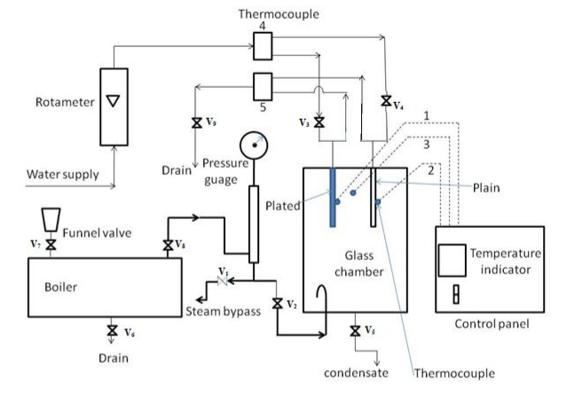
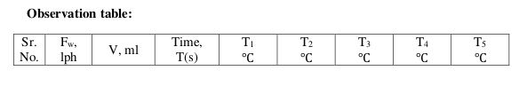
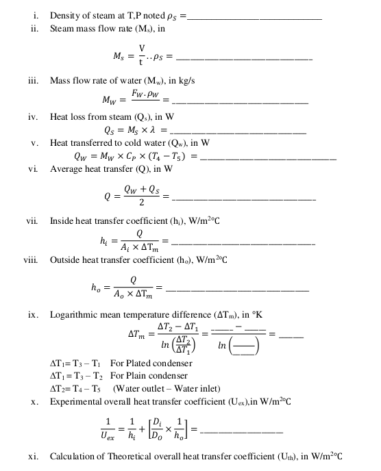
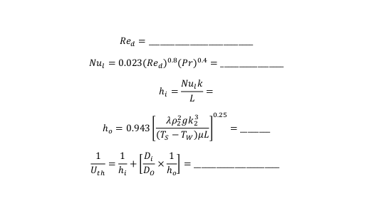

DROP-WISE AND FILM-WISE CONDENSATION
AIM
I. To have a visual observation of filmwise and dropwise condensation.
II. To determine overall heat transfer coefficients in both filmwise and dropwise
condensation both experimentally as well as theoretically.
THEORY
In all process, the steam must condense as it transfers heat to a cooling medium, e.g. cold
water in condenser of a generating station, hot water in a heating calorimeter etc. during
condensation very high heat fluxes are possible and provided the heat can quickly be
transferred from the condensing surface to cooling medium, heat exchangers using steam
can be compact and effective.
Steam condenses on surface by two types: 'filmwise' and 'dropwise'. For the same
temperature difference between steam and surface dropwise condensation is more effective
than filmwise condensation.
(i) Filmwise condensation:
Most materials are wettable and as condensation occurs a film condensate spreads over the
surface. The thickness of film depends upon a number of factors like rate of condensation,
the viscosity of condensate and whether surface is horizontal or vertical. Fresh vapor
condenses on outside of film and heat is transferred by conduction through the film to the
metal surface beneath. As the film thickness increases, it flows downwards and dips from
lowest point, leaving the film intact. The film of liquid is a barrier to the transfer of heat and
its resistance accounts for most of the difference between the effectiveness of filmwise and
dropwise condensation.
(ii) Dropwise condensation:
By specialy treating the condenser surface, the contact angle can be changed and surface
become non- wettable. As steam condenses, a large number of beads cover the surface. As
condensation proceeds the beads become larger, coalesces and strikes downward over the
surface. The moving beads gather all static beads along with it in its downwardspath in its
trail. The bare surface offers very little resistance to the transfer of heat and very high heat
fluxes are possible. Unfortunately, due to the nature of material used in the construction of
condenses, filmwise condensation is normal
EXPERIMENTAL SETUP SCHEMATIC AND DESCRIPTION
The apparatus consists of a vertical frame. Condensation tubes are fitted inside compact glass
cylinder. The steam is provided in the cylinder from a steam generator. Two valves are fitted
to control flow rate of water in individual tubes. Digital temperature indicators are used to
monitor the temperatures at different locations in the experimental setup. A Digital
Temperature Controller is provided for controlling temperature of steam. Pressure gauge is
used to observe steam pressure and a rotameter is used to measure the cold water flow rate.
Water Level Indicator(not shown) is provided to safeguard the heater. Condensate is
measured using a measuring cylinder after the completion of the experiment.

EXPERIMENTAL PROCEDURE
- Ensure that ON/OFF switches given on the panel are at OFF positions.
- Close all drain valves.
- Open the funnel valve and air vent valve provided at the top of the steam generator.
- Fill water in the steam generator up to 3/4th of its capacity by observing the level of water
in level indicator.
- Switch ON the main supply.
- Set the required steam temperature with the help of DTC, above 100℃.
- Switch ON the heater and wait until the steam temperature reaches to the required value.
- Ensure that wet steam vent valve(V1 )and gate valve(V2 )provided at the front are closed.
- Allow steam to pass through the pipe and slowly open wet steam vent valve(V1 )to
release wet steam from the pipe.
- Close the vent valve(V1 ).
- Connect cooling water supply.
- Open the valve (V3 ) or (V4 ) to allow cooling water to flow through the desired condenser
(Ensure that during experiment, water is flowing only through the condenser under test
and the second valve is closed).
- Set the flow rate of cooling water by Rotameter.
- Open the gate valve(V2 ) to allow steam to enter in the test section and start the stop
watch to measure mass of steam condensed.
- Observe the steam that gets condensed on the tubes, and falls down in the glass cylinder
(Depending upon the type of condenser under test i.e. Dropwise or Filmwise
condensation).
- After reaching the steady state, record the temperature, flow rate of cooling water and
steam pressure.
- Stop the steam supply to the column with the help of gate valve(V2 ) and stop the stop
watch and open the drain valve(V5 ) of the glass chamber to measure the condensate in
a particular time.
OBSERVATIONS AND CALCULATIONS
SPECIFICATIONS
0.019 m
0.016 m
0.175 m
Fluid Properties: From physical property data at experimental condition from literature.
0.628 W/m.℃
0.6775 W/m.℃
Observation Table

Calculations


RESULTS AND DISCUSSIONS
I. The overall heat transfer coefficients from both experimental and theoretical calculations
for filmwise and dropwise condensation processes is as follows:
| Condensation process |
Experimental overall heat transfer coefficient (Uex) |
Theoretical overall heat transfer coefficient (Uth) |
| Filmwise condensation |
|
|
|
|
|
| Dropwise condensation |
|
|
|
|
|
PRECAUTIONS
- Never run the apparatus if power supply is less than 180 volts and above 230 volts.
- Never switch ON mains power supply before ensuring that all the ON/OFF switches
given on the panel are at OFF position.
- Operator should switch OFF the temperature indicator gently.
- Always keep the apparatus free from dust.
REFERENCES
- Coulson, J.M., Richardson, J.F., "Coulson & Richardson's Chemical Engineering Volume
2", 5th ed., Asian Books ltd., ND, 1996, Page 623-624.
- Jutz-Scharkus, "Westarmann Tables", 3"1 ed., New Age International Publishers., ND,
2008, Page 32.
- Arora, D., "A Course in Heat & Mass Transfer", 6th ed., Dhanpat Rai & CO.(P)
LTD.,NY,2003, page A.6.